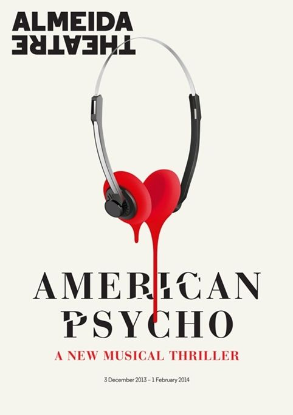

Le graphisme
Le graphisme est une discipline créative, dérivée des arts plastiques, qui englobe de nombreux domaines: direction artistique, typographie, mise en pages, technologies de l'information et autres aspects créatifs.
Venez découvrir plus de précisions sur le graphisme.
Affiches
|
Images télévisuelles
|
Web Design





De nombreuses créations graphiques doivent inclure des informations générales peu précises, ce qui peut conduire à
une certaine ambiguité. Le graphisme d'information a pour but de faire passer des messages spécifiques et détaillés:
comment assembler des meubles en kit; le dosage recommandé pour un médicament; la date, l'heure et le lieu d'un
évènement; comment installer un logiciel; ou le montant réglé sur votre reçu de carte bancaire. Dans ces conditions,
le graphisme sert à attirer l'attention sur les informations essentielles afin qu'elles soient sans équivoque.
Le graphisme d'une facture pourra intégrer des textes de différentes tailles afin d'établir une hierarchie qui
présente clairement la somme due. Ou poser le texte en contraste avec des fonds de couleur, permettant de faire
la distinction entre les sommes à payer et les montants à recevoir. Un schéma en dit souvent plus long que des mots,
ce qui explique le fait que les indications de montage soient souvent accompagnées d'images ou d'illustrations.
C'est aussi la raison pour laquelle beaucoup de factures de services comprennent maintenant des graphiques, afin
d'aider les consommateurs à visualiser l'évolution de leur consommation.
Avec l'évolution de la technologie, les appareils se font de plus en plus petits, complexes, intégrés à
d'autres équipements, et présentent une plu grande diversité d'applications. Par exemple, l'écran d'un
téléphone portable peut désormais montrer les jaquettes de CD en couleurs, dans un format bien plus réduit
que s'il s'agissait des pochettes de vinyles. Certains acceptent les avancées technologiques mais d'autres
le rejettent. Toujours dans le domaine musical, il y a eu une certaine résistance de la part des graphistes
lorsqu'est apparu le CD, qui laissait moins de place à la création. Aujourd'hui, la taille du graphisme est de
plus en plus influencée par la quantité limitée de pixels qu'une création peut occuper. Avec chaque nouvelle
réduction, la mise en pages, les caractères et les images vont avoir plus de mal à transmettre un messages
identifiable. Afin de faire face à ces échelles toujours plus petites, on a dû simplifier les fontes pour les
rendre plus lisibles, et les images doivent désormais êtres capables de répondre aux exigences des divers
médias sur lesquels elles vont apparaître.
Le graphisme environnemental diffère des autres formes de graphisme en ce qu'il dépend lourdement de la forme
humaine; il utilise un plus grand format et doit interagir pratiquement avec des structures physique. Par exemple, toute
signalétique devrait etre à hauteur d'yeux afin d'être bien visible. L'architecte moderniste Le Corbusier s'est penché
l'interaction entre graphisme et forme humaine dans son oeuvre Le Modulor, qu'il a écrit entre 1943 et 1955. Il y proposait
un système de dimensions coordonnées applicable à l'architecture et basé sur les mensurations d'un homme mesurant 1,80mètres.
Le graphisme environnemental peut transmettre un message ou une ambiance de façon subtile, comme le démontrent les exemples
de la page ci-contre, ou de façon plus directe, comme dans le cas d'une signalétique directionnelle. Les limites entre ces
approches directes et indirectes de communication dans des endroits publics commencent à s'étioler, car nous nous habituons
de plus en plus à voir ces deux types de messages au quotidien. Le public identifie plus aisément les messages dans son
environnement architectural, de sorte que les graphistes peuvent proposer des créations moins explicites.